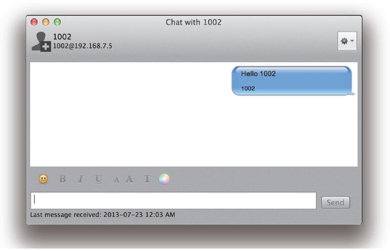

18.2 Event Socket协议
无论是上一节说的哪种模式，FreeSWITCH都要跟外部的程序“交流思想”，这就要求它们说同一种语言。上面我们为了区分SIP、RTP等协议，说这是一种方言。在此，我们姑且称这种方言为ESL（Event Socket Language，实际上ESL是Event Socket Library，即Event Socket库的缩写）。
ESL协议是纯文本的协议。它的设计思想来自于大家熟悉的HTTP协议及SIP协议 [1] 。如果对这些协议还不熟悉，可以翻回第7章看看。这里再稍微啰嗦一点点─该协议的特点就是大部分消息（一些命令除外）都有一些字段组成的消息头（Header），某些消息有消息体（Body），某些则没有。消息头中有一个名为Content-Length的字段，其标志了消息体的长度。消息头和消息体之间用两个回车换行符“\r\n\r\n”隔开。
用户程序（TCP Server/Client）可以使用sendmsg发送App或直接发送其他API命令，此外还有其他相关的认证、订阅事件等操作指令。
下面我们先来看两个外连和内连的例子，然后简单介绍一下EventSocket协议的内容。
18.2.1 外连
我们使用如下Dialplan进行测试：
<extension name="socket">
<condition field="destination_number" expression="^1234">
<action application="socket" data="localhost:8040 async full"/>
</condition>
</extension>
当电话呼叫1234时，FreeSWITCH便会使用Outbound模式，使用socket App启动Socket连接。注意这里的两个参数async和full。其中，async表示异步执行。默认是同步的，比如在同步状态下，如果FreeSWITCH正在执行playback操作，而playback是阻塞的，因而在playback完成之前向它发送任何消息都是不起作用的，但异步状态可以进行更灵活的控制。当然，异步状态增加了灵活性的同时也增加了开发的复杂度，读者在实际的开发过程中可以对比一下它们的异同。另一个参数full指明可以在外部程序中使用全部的API，默认只有少量的API是有效的。至于哪些API跟这个参数相关，也留给读者自行练习。总之一句话，如果你不确定，那么加上full是没有错的。
好了，电话来了，由于我们还没有准备好TCP Server，因此连接会失败，电话就断掉了。
下面我们需要实现一个TCP Server，在这里我们使用netcat这个工具来讲解。
netcat是一般Linux系统自带的一个工具，它可以启动一个Socket，做服务器或客户端。如果作为客户端，你可以认为它类似于你更熟悉的telnet命令。虽然它叫netcat，但程序的名字是nc。如果系统默认没有安装，可以尝试使用下列命令来安装：
apt-get install netcat # Ubuntu/Debian
yum install netcat # CentOS
yum install nc #
其他？
打开一个终端A，启动一个ServerA，监听8040端口（其中-l表示监听，即listen；-k表示客户端断开后继续保持监听。注意，有些版本的netcat参数稍有不同，使用时请查看相关的man文档）。
nc -l -k localhost 8040
打开另一个终端（Terminal）B，启动一个Client B连上它：
nc localhost 8040
然后在这个客户端中打些字，回车，在终端A中就应该能看到你输入的文字了。
好了，接下来按Ctrl+C退出终端B，到这里就该让FreeSWITCH上场了，即我们用FreeSWITCH来替换终端B。
拿起电话拨打1234，电话路由到Socket，FreeSWITCH就会连到ServerA上。这时候你听不到任何声音，因为Channel处于Park状态。但是你在ServerA里也看不到任何连接的迹象。不过，如果你打开另一个终端，使用如下命令可以显示8040端口已处于连接（ESTABLISHED）状态。
$ netstat -an|grep 8040
tcp4 0 0 127.0.0.1.8040 127.0.0.1.60588 ESTABLISHED
tcp4 0 0 127.0.0.1.60588 127.0.0.1.8040 ESTABLISHED
tcp4 0 0 127.0.0.1.8040 *.* LISTEN
好了，现在回到终端A，输入connect然后打两下回车，奇迹出现了吧？你应该会看到类似下面的输出：
Event-Name: CHANNEL_DATA
Core-UUID: 4bfcc9bd-6844-4b45-96a7-4feb2a4f9795
...
这便是FreeSWITCH发给ServerA的第一个事件消息，里面包含了该Channel所有的信息。下面该Channel何去何从就完全看你的了。比如，发送如下消息给它放段音乐（local_stream://moh）：
sendmsg
call-command: execute
execute-app-name: playback
execute-app-arg: local_stream://moh
建议你直接粘贴上面的命令到ServerA的窗口里，记得完成后按两下回车。sendmsg的作用就是发送一个App命令（这里是playback）给FreeSWITCH，然后FreeSWITCH就乖乖地照着做（执行该App）了。如果你玩够了，就把上面的playback换成hangup再发一次，电话就挂断了。这些命令就跟直接写到Dialplan里一样，不同的是现在是由你来控制，以后你可以用自己的程序控制什么时候该发什么命令。
18.2.2 内连
FreeSWITCH启动后会启动一个EventSocket TCP Server，IP、端口号和密码均可以在conf/autoload_configs/event_socket.conf.xml文件里配置。
还记得上面我们在终端B里用nc做客户端吧？在此，我们还使用nc作为客户端，使用以下命令连接FreeSWITCH：
nc localhost 8021
连接上以后，你会看到如下消息：
Content-Type: auth/request
这表示已经连接上FreeSWITCH的Socket了，并且它告诉你，应该输入密码进行验证。这时我们输入“auth ClueCon”，记得按两下回车。FreeSWITCH默认监听在8021端口上，默认的密码是ClueCon，因此我们在上面使用了这些默认值，当然需要的话也可以根据情况在conf/autoload_configs/event_socket.conf.xml中修改。
如果一切顺利的话，我们就已经作为一个客户端连接到FreeSWITCH上了。可以输入下列命令试一试（记得每个命令后面都按两下回车）：
api version
api status
api sofia status
api uptime
你肯定经常在fs_cli中使用这些命令，只不过在此我们在每个命令前面多加了个“api”。其实fs_cli作为一个客户端也是使用ESL与FreeSWITCH通信的，只是它帮你做了好多事，你不用手工敲一些协议细节了。但在这里，我们手工输入各种命令，更有助于理解这些细节，例如：
api status
Content-Type: api/response
Content-Length: 327
UP 0 years, 0 days, 17 hours, 13 minutes, 19 seconds, 959 milliseconds, 304 microseconds
FreeSWITCH (Version 1.2.11 git b9c9d34 2013-07-20 19:06:40Z) is ready
27 session(s) since startup
0 session(s) - 0 out of max 30 per sec peak 2 (0 last 5min)
1000 session(s) max
min idle cpu 0.00/100.00
Current Stack Size/Max 240K/8192K
键入如下命令接收事件：
event plain ALL
可以订阅所有的事件，当然如果你看不过来可以少订一些。比如，下列命令仅订阅CHANNEL_CREATE事件：
even plain CHANNEL_CREATE
它等效于在fs_cli中输入以下命令：
/event plain CHANNEL_CREATE
18.2.3 Event Socket命令详解
我们上面举了几个简单的例子，用到了几个命令。实际上，ESL还提供了更多的命令，用于各种控制。下面列举了大部分在Event Socket中可以使用的命令。
1.auth
对于Inbound连接来说，auth是第一个需要发送的命令，用于向FreeSWITCH认证，格式如下：
auth <password>
例如：
auth ClueCon
实际的密码（这里是Cluecon）是在conf/autoload_configs/event_socket.conf.xml中定义的。
2.api
api命令上面已经讲过了，它用于执行FreeSWITCH的API，语法如下：
api <command> <args>
其中，command和args分别是FreeSWITCH实际的命令和参数，上面已经举过例子，在此就不多讲了。
3.bgapi
api命令是阻塞执行的，因此，对于执行时间比较长的API命令（如originate），会有一段时间得不到响应结果，影响实时接收事件。因此，可以使用bgapi将这些命令放到后面执行，语法是：
bgapi <command> <args>
上述命令会立即执行，在后台建立一个任务（Job），并返回一个Job-UUID，如：
Content-Type: command/reply
Reply-Text: +OK Job-UUID: c7709e9c-1517-11dc-842a-d3a3942d3d63
当真正需要执行的API命令返回后，FreeSWITCH会产生一个BACKGROUND_JOB事件，该事件带了原先的Job-UUID以及命令执行的结果。因而客户端可以通过匹配Job-UUID知道上一次命令的执行结果。
另外，FreeSWITCH也允许客户端提供自己的Job-UUID，这样匹配起来就更容易一些（但客户端需要保证产生的Job-UUID要全局唯一），命令格式是：
bgapi <command> <args>
Job-UUID: <uuid>
如下面的例子：
event plain BACKGROUND_JOB (
订阅BACKGROUND_JOB
事件)
Content-Type: command/reply (
上述指令的返回结果)
Reply-Text: +OK event listener enabled plain
bgapi status (
使用bgapi
执行status
命令)
Job-UUID: My-UUID (
指定Job-UUID)
Content-Type: command/reply (
上述指令的返回结果)
Reply-Text: +OK Job-UUID: My-UUID
Job-UUID: My-UUID
Content-Length: 852 (
在此我们收到一条消息，长度是852
字节)
Content-Type: text/event-plain (
消息类型是text/event-plain)
Event-Name: BACKGROUND_JOB (
消息中的内容是一个事件—Event
，它的名字是BACKGROUND_JOB)
...
省略一些事件的消息头)
Event-Sequence: 9308
Job-UUID: My-UUID (
从该头域中可以看到Job-UUID
与我们在上述bgapi
中指定的匹配)
Job-Command: status (
该事件的正文本部分就包含了status
命令的输出)
Content-Length: 325 (
事件正文部分的长度，接下来是事件正文，即status
命令的输出)
UP 0 years, 0 days, 17 hours, 1 minute, 27 seconds, 717 milliseconds, 221 microseconds
FreeSWITCH (Version 1.2.11 git b9c9d34 2013-07-20 19:06:40Z) is ready
27 session(s) since startup
0 session(s) - 0 out of max 30 per sec peak 2 (0 last 5min)
1000 session(s) max
min idle cpu 0.00/100.00
Current Stack Size/Max 240K/8192K
4.linger和nolinger
在外连模式下，当一个Channel挂断时，FreeSWITCH会断开与TCP Server的Socket的连接。这时，可能还有与该Channel相关的事件没有来得及发送到TCP Server上，因而会“丢失”事件。为避免这种情况发生，TCP Server可以明确告诉FreeSWITCH希望它能在断开之前“逗留”（linger）一段时间，以等待把所有事件都发完。格式如下：
linger <seconds>
例如：
linger 10
如果开启了linger又后悔了，可以再用nolinger命令撤销，该命令没有参数。
5.event
event用于订阅事件。让FreeSWITCH把相关的事件发送过来。格式是：
event [type] <events>
其中，type（即事件类型）有plain、json和xml三种，默认为plain，即纯文本；events参数可以指定事件的名字，或者使用ALL表示订阅全部事件。订阅全部事件的命令如下：
event plain ALL
仅订阅部分事件，事件名字之间以空格隔开：
event plain CHANNEL_CREATE CHANNEL_ANSWER CHANNEL_HANGUP_COMPLETE
要想订阅CUSTOM事件该怎么做呢？CUSTOM事件即自定义事件，它是一类特殊的事件，它主要是为了扩充FreeSWITCH的事件类型，它具体的类型是在Subclass中指定的，如下面的指令指定订阅Subclass为“sofia::register”的事件：
event plain CUSTOM sofia::register
可以一次订阅多个CUSTOM事件，如：
event plain CUSTOM sofia::register sofia::unregister sofia::expire
也可以使用多个event命令混合订阅，如：
event plain CHANNEL_ANSWER CHANNEL_HANGUP
event plain CHANNEL_BRIDGE CUSTOM sofia::register sofia::unregister
但参数中一旦出现了CUSTOM，后面就不能有普通的事件类型了。如下面的订阅方法是达不到预期的效果的（FreeSWITCH会把CHANNEL_ANSWER当成CUSTOM事件的Subclass对待，因而不是你想要的）：
event plain CHANNEL_CREATE CUSTOM sofia::register CHANNEL_ANSER
另外，CUSTOM事件必须逐一明确订阅，如下面这种订阅形式是不对的：
event plain CUSTOM ALL
其他的例子还有：
event json CHANNEL_CREATE
event xml CHANNEL_CREATE
event plain DTMF
event plain ALL
最后，值得一提的是，HEARTBEAT是一个特殊的事件，它每20秒就产生一次，用于汇报FreeSWITCH的当前状态。有时候可以用它做心跳，如果超过20秒没收到事件，就可以认为网络或FreeSWITCH异常。下面是HEARTBEAT事件的三种不同输出格式：
json格式：
Content-Length: 939
Content-Type: text/event-json
{
"Event-Name": "HEARTBEAT",
...
"Event-Info": "System Ready",
"Up-Time": "0 years, 0 days, 22 hours, 19 minutes, 14 seconds, ...
...
}
XML格式：
Content-Length: 1432
Content-Type: text/event-xml
<event>
<headers>
<Event-Name>HEARTBEAT</Event-Name>
...
<Event-Info>System%20Ready</Event-Info>
<Up-Time>0%20years,%200%20days,%2022%20hours,%2019%20minutes,%2034%20seconds,...</Up-Time>
...
</headers>
</event>
PLAIN（纯文本）格式：
Content-Length: 848
Content-Type: text/event-plain
Event-Name: HEARTBEAT
...
Event-Info: System%20Ready
Up-Time: 0%20years,%200%20days,%2022%20hours,%2019%20minutes,%2054%20seconds,...
...
6.myevents
myevents是event的一种特殊情况，它主要用于Outbound模式中。在Outbound模式中，对于每一个呼叫（对应一个Channel），FreeSWITCH都会向外部的TCP Server请求以建立一个新的连接。外部的TCP Server就可以通过myevents订阅与该Channel（UUID）相关的所有事件。使用的格式为：
myevents <type><UUID>
当然，myevents也支持json及XML形式，如：
myevents
myevents json
myevents xml
当然，在Inbound模式中也可以调用myevents，这样它看起来类似于一个Outbound模式的连接，但它要指定UUID，原因是显而易见的，如：
myevents 289fe829-af62-47be-9a59-7519a77d0d40
7.divert_events
还有一类特殊的事件，它们是作为InputCallback产生的。那么什么时候会产生Input-Callback呢？回忆一下16.2.3节，当Channel上通过setInputCallback()函数安装了相关的回调函数并遇到某些事件，如收到用户按键（DTMF）或收到语音识别的结果（DETECTED_SPEECH），就会产生InputCallback这样的事件，并回调指定的回调函数，但这些InputCallback默认只能在嵌入式脚本的回调函数中捕获。通过使用divert_events，就能将这些事件转发到Event Socket连接上来，进而在通过Event Socket连接的外部程序中也能收到相关事件。使用格式是：
divert_events on #
开启
divert_events off #
关闭
8.filter
filter用于安装一个过滤器。这里的过滤不是“滤出”，而是“滤入”，即把符合过滤条件的过滤进来，也就是我们要收到它们。可以同时使用多个过滤器，使用格式是：
filter <EventHeader> <ValueToFilter>
例如，下面的例子与myevent<uuid>的作用是相同的：
event plain all
filter Unique-ID <uuid>
又如，下面的例子会订阅所有事件，但只接收匹配主叫号码是1001的事件：
event plain all
event filter Caller-Caller-ID-Name 1001
为了理解滤入的概念，可以看下面的例子以加深印象，它可以接收3个Channel事件：
event plain all
filter Unique-id uuid1
filter Unique-ID uuid2
filter Unique-ID uuid3
如果过滤器写错了，或不想使用某些过滤器了，则可以将其取消掉，如：
filter delete #
取消所有的过滤器
filter delete Unique-ID uuid2 #
仅取消与uuid2
相关的过滤器
9.nixevent与noevent
nixevent是event的反义词，与event的语法一样，只是取消某些已订阅的事件。如：
nixevent CHANNEL_CREATE
nixevent all
另外，还有一个noevent命令用于简单取消使用event订阅的所有事件，相当于“nixevent all”。
10.log
跟使用event订阅事件类似，log用来订阅日志，它的使用格式是：
log <level>
其中level级别我们在6.1.4节已经讲过了，如：
log info
log 6
下面是一个完整的例子。这个例是在开启了info级别的日志以后打了一个电话，此时会收到很多日志信息，下面是两条信息：
$ nc 127.0.0.1 8022
Content-Type: auth/request
auth ClueCon
Content-Type: command/reply
Reply-Text: +OK accepted
log info
Content-Type: command/reply
Reply-Text: +OK log level info [6]
Content-Type: log/data
Content-Length: 141
Log-Level: 5
Text-Channel: 3
Log-File: switch_channel.c
Log-Func: switch_channel_set_name
Log-Line: 1030
User-Data: dfe873c8-f418-4807-8f45-0c87402fdebd
2013-07-23 00:22:17.293556 [NOTICE] switch_channel.c:1030 New Channel sofia/internal/1002@192.168.7.5 [dfe873c8-f418-4807-8f45-0c87402fdebd]
Content-Type: log/data
Content-Length: 103
Log-Level: 6
Text-Channel: 3
Log-File: mod_dialplan_xml.c
Log-Func: dialplan_hunt
Log-Line: 558
User-Data: dfe873c8-f418-4807-8f45-0c87402fdebd
2013-07-23 00:22:17.353573 [INFO] mod_dialplan_xml.c:558 Processing Seven <1002>->s in context default
11.nolog
log的反义词，关闭使用log命令订阅的日志，具体的使用方法很简单，这里不再介绍。
12.exit
告诉FreeSWITCH关闭Socket连接。FreeSWITCH收到该命令后会主动关闭Socket连接。
13.sendevent
通过sendevent可以向FreeSWITCH的事件系统发送事件。使用格式是：
sendevent <event-name>
比如，你可以发送一个NOTIFY消息：
sendevent NOTIFY
profile: internal
event-string: check-sync
user: 1002
host: 192.168.7.5
content-type: application/xml
content-length: 29
<xml>FreeSWITCH IS COOL</xml>
FreeSWITCH收到NOTIFY消息后，将启用内部处理机制，最后它可能会生成一个SIP NOTIFY消息，如：
NOTIFY sip:1002@192.168.7.5:32278;rinstance=3db08ce44e5166a4 SIP/2.0
Via: SIP/2.0/UDP 192.168.7.5;rport;branch=z9hG4bKXDtD32g0N9atg
Max-Forwards: 70
From: <sip:1002@192.168.7.5>;tag=ZF9SFyaUHeZ4p
To: <sip:1002@192.168.7.5>
...
Event: check-sync
Subscription-State: terminated;reason=noresource
Content-Type: application/xml
Content-Length: 29
<xml>FreeSWITCH IS COOL</xml>
当然，也可以使用它发送MESSAGE消息，如：
sendevent SEND_MESSAGE
profile: internal
user: 1002
host: 192.168.7.5
content-type: text/plain
content-length: 10
Hello 1002
上述命令将会产生如下的SIP消息：
send 623 bytes to udp/[192.168.7.5]:32278 at 16:01:23.686473:
------------------------------------------------------------------------
MESSAGE sip:1002@192.168.7.5:32278;rinstance=3db08ce44e5166a4 SIP/2.0
Via: SIP/2.0/UDP 192.168.7.5;rport;branch=z9hG4bK085Q8K3aD4DjK
Max-Forwards: 70
From: <sip:1002@192.168.7.5>;tag=11UBKmc2B0Bae
To: <sip:1002@192.168.7.5>
...
Content-Type: text/plain
Content-Length: 10
Hello 1002
笔者使用Bria注册的SIP客户端收到消息的界面如图18-3所示。

图18-3 Bria收到SIP MESSAGE后的显示
当然，在实际使用中更多的是产生CUSTOM的事件，可以自定义一些事件类型。使用这种方式甚至可以把FreeSWITCH当成一个消息队列（Message Queue）来用，如你可以启动一个客户端订阅以下消息：
event plain CUSTOM freeswitch:book
我们可以在另外的客户端上发送一条消息，如：
sendevent CUSTOM
Event-Subclass: freeswitch::book
content-type: text/plain
content-length: 44
This Message comes from the FreeSWITCH Book!
我们可以在订阅该消息的客户端上收到如下信息：
Content-Length: 688
Content-Type: text/event-plain
Event-Subclass: freeswitch%3A%3Abook
Command: sendevent%20CUSTOM
...
content-type: text/plain
Content-Length: 44
This Message comes from the FreeSWITCH Book!
[1] 关于这种类型的协议，可以参考一下http://www.ietf.org/rfc/rfc2822.txt，但ESL并不是完全遵循该RFC。